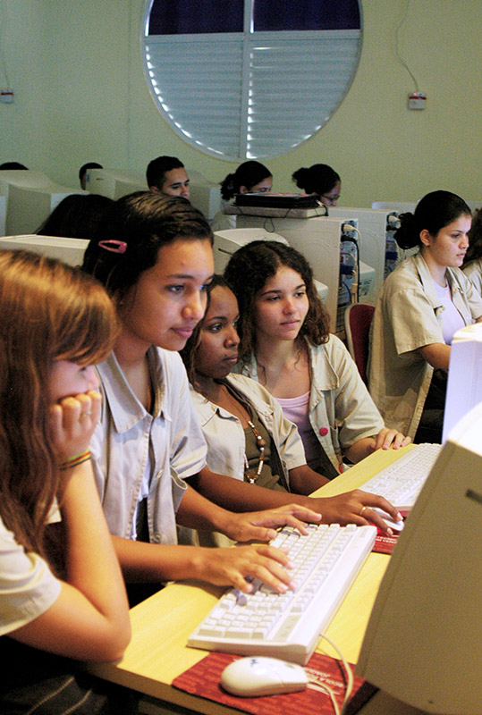

Promovendo a interação entre os participantes, constituindo rodas de conversa, qualificando e aprimorando a escuta;
Módulo 3 | Aula 3 A educação em saúde e a educação popular em saúde como estratégias para a assistência à saúde na APS
Tópico 2
Educação popular como pedagogia

Inicialmente é fundamental a construção da identidade coletiva em que cada participante do encontro, agora caracterizado como roda de conversa, exponha seus pensamentos, cabendo ao educador (monitor) a elaboração e apresentação das sínteses provisórias que levem à proximidade com o outro, de modo que possam se caracterizar como grupo.
À medida que a roda de conversa vai girando, o grupo identifica os incômodos que afetam os indivíduos e os coletivos. O educador retoma as questões básicas – por que é assim? não poderia ser diferente? –, organiza os fatos, as vivências e percepções relatadas segundo a posição de determinantes e condicionantes. Neste processo, são identificados temas e palavras geradoras que irão alimentar o caminho do grupo na busca de soluções. Os temas geradores problematizam as vivências relatadas para além de evidências cristalizadas nas explicações hegemônicas, pois no diálogo aberto são aprofundadas em sua perspectiva crítica e reflexiva, construindo as situações-limite.
A busca da superação é o momento da sistematização das possíveis soluções para estas situações que Freire (1971) denomina de “percebido destacado”, resultado da percepção clara e crítica das dimensões concretas e históricas de uma dada realidade, que precisa ser superada pela intervenção das pessoas, dos coletivos, das instituições e da equipe de saúde para a construção do inédito viável.
Após a compreensão da importância dos aspectos teóricos abordados até o momento, que são pressupostos para o planejamento das ações educativas em saúde, vamos relembrar alguns pontos principais, antes de entrarmos em aspectos mais práticos da programação das ações educativas no contexto das doenças crônicas não transmissíveis (DCNT):
Referenciais para as ações educativas em saúde
- São aspectos relevantes do cotidiano de trabalho das UBS: diferenças culturais, distanciamento entre os saberes e significados atribuídos pelos profissionais de saúde e pelos usuários e a existência de situações complexas, que englobam os processos de adoecimento e sofrimento e a presença de vulnerabilidade social.
- Compreender as estratégias de sobrevivência e dialogar com as justificativas para os comportamentos e atitudes dos usuários que apresentam doenças crônicas é fundamental para o processo de cuidado.
-
A construção compartilhada da categoria “modos de viver” mostra-se como dispositivo estratégico para a realização das ações educativas na relação entre usuários e profissionais de saúde envolvidos no cuidado para o enfrentamento de situações complexas definidas pela presença de doenças crônicas. Em relação a esta ferramenta:
- consiste na sistematização da escuta por parte dos profissionais de como os usuários analisam, explicam, justificam a existência da doença para si, sua família e grupos, possibilitando novas compreensões e atitudes.
- devem existir condições externas e ambientação para que o outro se sinta à vontade e autorize a si mesmo a falar sobre sua vivência. Tais competências exigem certas habilidades do profissional que necessitam ser incorporadas ao processo de trabalho em saúde.
Condições para as ações educativas em saúde
- O princípio fundamental das ações educativas é a comunicação que se estabelece entre os participantes.
- O diálogo deve ser produtivo, participativo, fazer sentido para a vida das pessoas, fortalecendo a vontade de agir.
- O diálogo deve promover a horizontalidade entre os sujeitos.
- As ações de educação em saúde devem se articular com as proposições advindas das conferências de saúde, contempladas nos planos municipais, e devem ser planejadas nas UBS, entre as demais ações desenvolvidas, com carga horária, cronograma, responsáveis, espaço físico e material básico de apoio.
Mas, como os profissionais de saúde da APS podem desenvolver as ações educativas? Simples! Clique nas setas e veja alguns exemplos.
Para refletir...
Você já pensou em realizar uma roda de conversa na sua APS? Aqui vão algumas ideias para a implementação:
- Cada participante deve expor seus pensamentos, cabendo ao educador (monitor) a elaboração e a apresentação das sínteses que levem à proximidade com o outro, de modo que possam se caracterizar como grupo;
- À medida que a roda vai girando, o grupo identifica os incômodos que afetam os indivíduos e os coletivos;
- O educador, em seguida, retoma as questões básicas: – por que é assim? – Não poderia ser diferente? Organiza os fatos, as vivências e as percepções relatadas;
- Nesta dinâmica da roda de conversa, são identificados temas geradores que irão alimentar o caminho do grupo na busca de soluções.